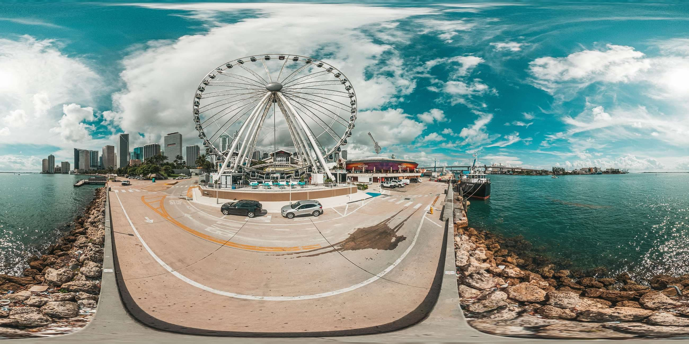
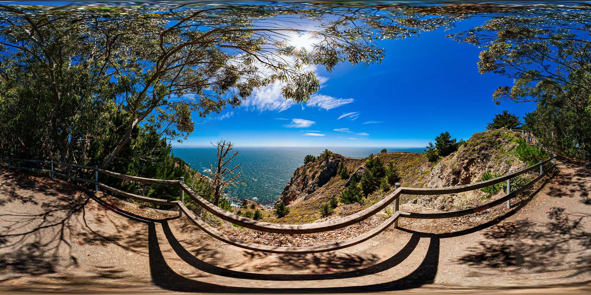
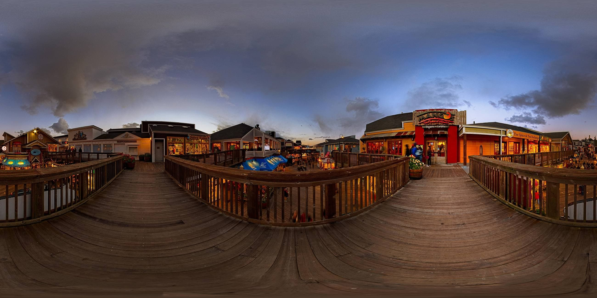

Ferris Wheel, Miami, FL
View Full PanoramaThe Ferris Wheel
Info Icon On hover -> Wheel stats and link to ticket sales.
The Road Below
Location Pin On hover -> Name of road and link to GPS directions on Google Maps.
The Ship Docked (On the right)
Info Icon On hover -> Ship name, video w/ historical information.
Muir Beach, CA
View Full PanoramaThe Muir Beach Overlook
Location Pin On hover -> Name of the vista point and mini photo gallery.
The Trail
Location Pin On hover -> Name of trail and link to GPS directions through Google Maps
The Ocean View
Info Icon On hover -> Name of the ocean, direction facing.
Pier 39, San Francisco, CA
View Full PanoramaThe Pier Blow
Location Pin On hover -> Modal with the name of the pier and historical information, and points of interest.
Mango's Cantina
Info Icon On hover -> Name of the restaurant, restaurant description, link to the website.
The Merry Go 'Round (In the back)
Info Icon On hover -> Ride name, modal w/ historical information, and gallery of photos.